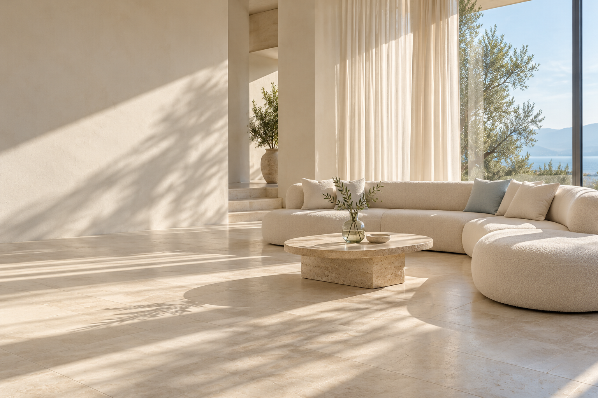
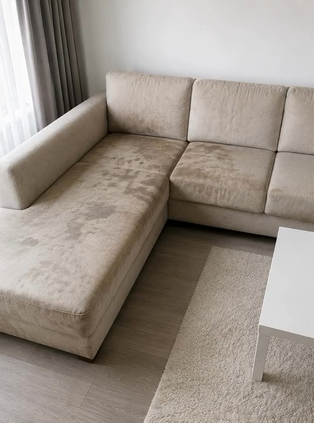
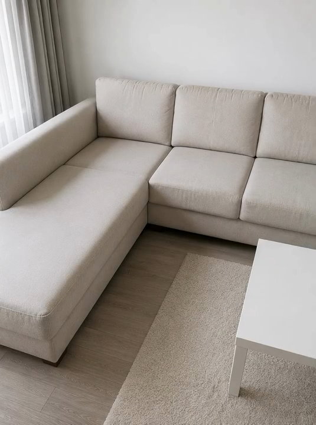

Pastërti nëçdo detaj.
Shtëpi, biznese apo makina. Pastrim profesional me pajisje vakumi, avulli dhe kujdes të përshtatur për çdo material.
Një ekip.
Shumë zgjidhje.
Nga apartamenti te biznesi, nga tapiceria te makina. Zgjidhni shërbimin që ju duhet dhe na tregoni detajet.
Pajisje dhe solucione profesionale, të zgjedhura sipas materialit.
01Shtëpi & vila
Pastrim profesional apartamentesh dhe vilash. Kujdes për kuzhinën, tualetet, dyshemetë dhe sipërfaqet, sipas nevojave të ambientit tuaj.
Kërko çmim02Zyra, hotele & biznese
Pastrim zyrash, hotelesh, restorantesh, baresh dhe kafenesh. Një ambient i kuruar për ekipin, klientët dhe mysafirët tuaj.
Kërko çmim03Avull & tapiceri
Pastrim i thellë divanesh me vakum dhe avull. Larje këndesh, karrigesh dhe dyshekësh dopio ose tek; pastrim kimik dhe trajtim sipas materialit.
Kërko çmim04Tapete & mokete
Larje tapetesh dhe moketesh me makineri e solucione profesionale. Trajtim i pluhurit, njollave dhe papastërtive të grumbulluara.
Kërko çmim05Xhama & heqje reklamash
Larje xhamash dhe heqje reklamash nga sipërfaqet prej xhami, me kujdes për materialin dhe gjendjen e tij.
Kërko çmim06Larje fasadash
Pastrim dhe larje fasadash me pajisje dhe solucione të përshtatshme. Detajet e shërbimit diskutohen sipas sipërfaqes dhe aksesit.
Kërko çmim07Detailing makinash
Pastrim profesional i makinave dhe tapicerisë së tyre, si për copë ashtu edhe për lëkurë. Kujdes i detajuar për ambientin e brendshëm.
Kërko çmim08Pas rikonstruksionit
Pastrim pas rikonstruksioneve, për një ambient të pastër dhe gati për përdorim. Shërbimi përshtatet sipas gjendjes dhe materialeve.
Kërko çmim09Mirëmbajtje vjetore
Shërbim vjetor për shtëpi, biznese dhe zyra. Përfshin edhe kujdesin për mjedisin e jashtëm: oborre, avlli dhe mirëmbajtje lulishteje, sipas marrëveshjes.
Kërko çmimFreski që
ndihet.
Pastrim i thellë me vakum, avull dhe solucione profesionale. Vëmendje ndaj pluhurit, njollave dhe papastërtive që fshihen në material.
Rezervo larjen- 01
Kënde & divane
Pastrim i thellë me kujdes për materialin.
- 02
Dyshekë dopio & tek
Larje dhe pastrim higjienik i dyshekëve.
- 03
Karrige
Larje tapicerie sipas llojit të copës.
- 04
Tapete & mokete
Pajisje dhe solucione për larje profesionale.
- 05
Tapiceri makine
Trajtim për tapiceri prej cope dhe lëkure.
- 06
Vakum & avull
Metoda të përshtatura për sipërfaqen.
Na dërgoni një foto të materialit për të diskutuar trajtimin dhe çmimin.
Një ndryshim
që duket.
Pastërti që shihet në çdo detaj. Freski që ndihet.
Pamje demonstrimi

Kujdes gjatë
gjithë vitit.
Mala Cleaning në shërbimin tuaj, me mirëmbajtje vjetore për shtëpi, zyra dhe biznese. Përcaktojmë së bashku çfarë ju duhet dhe sa shpesh.
Diskutojmë mirëmbajtjenAmbienti i brendshëm
Pastrim për shtëpi, zyra dhe biznese, sipas nevojave tuaja.
Oborre & avlli
Kujdes për pastërtinë e mjedisit të jashtëm.
Lulishte
Mirëmbajtje e lulishteve si pjesë e shërbimit të dakordësuar.
Plan i përshtatur për ju
Përfshirjet, oraret dhe çmimi diskutohen përpara fillimit.
Na tregoni ambientin dhe vendndodhjen për të konfirmuar disponueshmërinë.
Profesionalizëm.
Besim. Kujdes.
Mala Cleaning ofron pastrim profesional për shtëpi dhe biznese në Shqipëri. Me makineri dhe solucione profesionale, kujdesemi për ambientin, tapicerinë dhe makinën tuaj.
Shërbim cilësor dhe i besueshëm
Diskutojmë nevojat dhe i kushtojmë vëmendje çdo detaji të punës.
Kujdes për materialin
Vakum, avull dhe produkte të përzgjedhura sipas sipërfaqes që trajtojmë.
Zgjidhje për përditshmërinë
Nga larja e divanit te mirëmbajtja vjetore e shtëpisë apo biznesit tuaj.
Partnerë & klientë.
Detajet bëjnë
ndryshimin.
Një vështrim nga afër te pastrimi profesional me Mala Cleaning.
Na ndiqni në InstagramVideo referencë
Pyetje të
shpeshta.
Keni diçka tjetër në mendje? Na shkruani dhe e diskutojmë së bashku.
Na pyesni në WhatsAppSi mund të rezervoj?
Plotësoni formularin ose na shkruani në WhatsApp te 069 475 9925. Na tregoni shërbimin, ambientin dhe vendndodhjen.
Në cilat zona ofroni shërbim?
Mala Cleaning ofron shërbime në Shqipëri. Na tregoni qytetin dhe zonën për të konfirmuar disponueshmërinë dhe detajet e shërbimit.
Çfarë përfshin mirëmbajtja vjetore?
Shërbimi përshtatet për shtëpi, zyra dhe biznese dhe përfshin edhe mirëmbajtjen e jashtme, si pastrim oborresh e avllish dhe kujdes për lulishte. Përfshirjet dhe shpeshtësia dakordësohen së bashku.
Sa kohë duhet të thahet tapiceria?
Mala Cleaning ofron larje me tharje deri në 80–90% në moment. Rezultati dhe tharja e plotë varen nga materiali, gjendja dhe ajrosja. Na tregoni çfarë do të lahet për të diskutuar detajet.
A pastroni tapiceri makinash prej lëkure?
Po. Ofrojmë pastrim profesional dhe detailing makinash, si dhe larje tapicerie prej cope apo lëkure, me trajtim sipas materialit.
Si përcaktohet çmimi?
Çmimi varet nga shërbimi, sipërfaqja, gjendja dhe vendndodhja. Mund të dërgoni foto ose video në WhatsApp për të diskutuar çmimin.
A konfirmohet rezervimi nga formulari?
Formulari përgatit mesazhin tuaj në WhatsApp. E dërgoni ju; shërbimi, çmimi, data dhe orari konfirmohen më pas me ekipin.
Puna jonë.
Fjalët e tyre.
Përshtypje të klientëve në Google.
Përvoja juaj ka rëndësi.
Përshtypjet e klientëve do të shfaqen së shpejti këtu.
Pastërtia fillon
me një mesazh.
Na tregoni ambientin, shërbimin dhe vendndodhjen. Konfirmojmë së bashku disponueshmërinë, çmimin dhe orarin e përshtatshëm.
069 475 9925